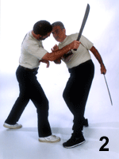
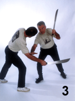
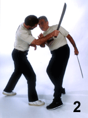
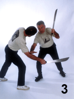

The Lost Art of Garrote Larense
By Bruno CruicchiMany fine martial arts have been preserved through time. Some were preserved because they became widely known and popular. Other, more obscure arts were preserved only through the unbending iron will of practitioners determined not to let them die (often despite personal and governmental opposition, threats, prohibitions, prison sentences, and even death). One such art, garrote, survives in South America, specifically in Venezuela, largely through music.
During festivals honoring St. Anthony,
inhabitants of the Venezulan state of Lara gather in
the streets of Barquisimeto and dance the Tamunange.
A part of this dance is called La Batalla (the
battle), and in it garroteros (garrote players)
play to the music--not with musical instruments, but
with their garrotes, or sticks. Some just
clash sticks, but others literally do battle, fighting it
out to test and prove their skill.
Origins
Although the origins of garrote Larense are shrouded in mystery, it is no coincidence that it shares a number of Spanish terms in common with many Filipino arts. For example, some Filipino old-timers still use the word garrote for stick. Much like the Philippines, Spanish-speaking Venezuela was part of the Spanish empire for more than 300 years. Spain, you should know, was the source of some of the finest fencers in the world. It was only natural, then, that the Venezuelan peasants would copy, practice, and even improve on some of the swordsmanship they were privileged to observe. Despite the fact that lowly peasants could not afford swords, they were, nonetheless, skilled with their machetes--tools they used every day, and sometimes on Saturday nights when someone had too much to drink and tempers flared or when defending the honor of a beautiful woman.
The Tradition Endures: Garrote Today
As if by magic, masters of garrote seem
to know their opponent's next move. This "magic" is
actually the result of precise footwork, body angulation,
and manipulation of the stick, all of which serve to limit
the opponent's options. The master garrotero
guides the opponent toward predictable responses by
offering him fewer opportunities for attack. Moreover,
the garrotero actually baits his opponent
practically forcing him to attack the openings the
garrotero himself selects, thereby making the
attack even easier to counter. So how do these masters
reach such high levels of skill? Through hard, often
painful training.
Garrote training is conducted without protective gear or padded sticks (which explains a lot of the "intensity" inherent in this art). The old masters believed that pain was the best teacher, and while some criticize this approach, it is amazing to see how an apparently slow or sluggish student reacts very quickly after the first couple of "touches." There is something eye-opening, even to the otherwise seasoned martial artist, about closing the gap and having to slip a long hard stick (made from branches of the lemon tree) that can easily be manipulated with a little hand movement, mainly the wrist.
Another of the characteristics that tie garrote to Filipino arts is the fact that whatever one learns with the stick can be, with minor adjustments, adapted to the machete (bolo), knife, or empty hand. Moreover, garrote training develops practitioners who are as much at ease with the weapon in their left hand as they are with it in their right. This makes the garrotero a highly unpredictable and, therefore, formidable fighter.
Because there is no way to know how an
opponent will attack in real life, once the garrote
student has learned the basics, he further develops and
hones his skills through sparring, where he moves and
counters using the system's highly dynamic footwork, fluid
body angulation, deflection, evasion, hand switching, and
tremendous power generated by body torque. The intensity
of training in garrote develops, as you might expect,
lightning reflexes, but it also develops a calm demeanor
and the ability to keep one's cool in every
situation.
The Basics
The first thing the student learns is not how to strike someone, as you might expect, but the cuadro, or cross pattern.1 Cuadro is a footwork pattern the student must fix in his mind throughout his training. Using this simple pattern, the student learns to move in ways that not only help him avoid the attacking baton, but also position him to deliver a powerful counterstrike. From there he graduates to more lethal weapons: knives and machetes.
As in Filipino fighting arts, garrote strikes come from practically anywhere. Factor in the rapid and frequent hand switching with the weapon, and garrote can seem a bit overwhelming. For this reason, the students are first taught four basic strikes: franco, revès, pulla, and barre campo. Those four strikes are illustrated below using the cuadro.
In the photographs that follow, the
practitioners are using machetes. This is not recommended
for beginners, but here our purpose is to show you how you
must mentally extend your practice beyond the stick.
Doing so opens your eyes to the seriousness with which
this art is practiced as well as the countless other
possibilities that the art of garrote Larense holds. In
observing combatants with real machetes in hand, it is
easy to focus on the weapon and completely miss the
footwork, which plays a critical role in garrote.
Unfortunately, time prohibits even a cursory examination
of the subtleties involved here, but as you study the four
sequences that follow, visualize a simple cross on the
floor and see how the footwork of the players outlines
each movement's quarter in the cuadro. Once a
student learns the basic strikes and the footwork
cuadro, he begins to develop other attributes
through controlled strikes as he picks up the pace in
practice with his seniors.
Franco
Franco means open. You can see the openness in Figure 1 where the garroteros are squared off in the classical ready position. It is "open" because there is nothing between the combatants--everything is open. The action begins in Figure 2 as the attacker (on the right) begins his assault with a downward vertical forehand strike. In almost serpentine undulation, the defender slips the attack by moving first his head, then his shoulder, and lastly the rest of his body out of harm's way (figs. 2 and 3). In such a life-and-death struggle, simple avoidance is likely insufficient to deter the attacker, so in Figure 4, the defender begins his counterattack.
When training this basic sequence,
the players would not simply stop here but would
continue by switching roles and resuming the flow depicted
in Figures 1, 2, 3, and so forth. This allows both
players to flow continuously back and forth, gaining many
repetitions in what becomes a fluid and highly dynamic
training method.
Revès
In this sequence, the garroteros are already in motion. The assailant (on the left) attacks his opponent with a downward descending right backhand strike known as revès, or reverse (fig. 1). In this case, the attacker's blow comes while the defender's weapon is in his right hand, and although this attack is directed to the defender's head or shoulders, it might just as well be directed toward a limb. Notice that in Figure 1, the defender switches his weapon from his right to his left hand. (Garroteros train for equal dexterity.) As the defender switches the weapon, he simultaneously slips inside his opponent's attacking line (fig. 2), again undulating to move his head, shoulders, limb, and finally his body away from the deadly attack. (Reminiscent of baguazhang, this undulation is a characteristic trait of garrote.) With his weapon now firmly in his left hand and his body momentarily out of danger, the defender counterattacks (fig. 3).
 



As you study these sequences, bear in mind
that they are much, much more than the simple techniques
you see here. As in any martial art, it is important
to look beyond the technique, beyond the attack and
counterattack. It is also important to look beyond
the obvious targets (i.e., the head and torso) to
alternative but equally disabling marks. Moreover,
you must look at how these flows can be combined.
Imagine after defending against franco, switching
the weapon from your right to your left hand, then
pressing your counterattack with a left-handed
revès.
Pulla
Continuing our visualization, it is easy to see a thrusting move as a quick follow-up to our initial revès counterattack (above). That thrust is called pulla.
Pulla (pronounced poo-ya) is an expression used in Venezuela that means "to pinch," as if to pinch someone with a needle--in this case, a very large needle.; As you can see, pulla is a basic thrust much like the Filipino number 5 line, only in this sequence, the pulla attack steps all the way through (fig. 1)--like a lunge. Using primarily the blade to deflect his opponent's weapon, the defender simultaneously weaves himself out of the way of the onrushing attack (fig. 2). If possible, the defender also checks his assailant's hand. Now out of harm's way, the defender is in a position to counter with a thrust of his own (fig. 3).
Could the defender have countered with
something other than pulla here? Absolutely. As
a matter of fact, garroteros are trained to very
quickly recognize any number of attacks and react with any
of several counters. An excellent counter to pulla
is our next movement, barre campo.
Barre Campo
Barre campo means "to clear the
field," and this sweeping attack does just that.
Figure 1 begins with the garroteros once again in
the classical ready position (OK, it's a Latin machismo
thing  ). In what looks at first to be a withdrawal,
the assailant's right hand falls back. But instead
of backing away, the attacker returns with a rising right
backhand slash designed to split the defender from femur
to clavicle (fig. 2). In a characteristic garrote
move, the defender avoids the attack while simultaneously
switching his weapon from his right to his left
hand. With his weapon now in his left land, the
defender simultaneously deflects the rising attack as he
completes his own escape (fig. 3). Finally, in a move
that both throws his opponent off balance and sets up his
own counterattack, the defender slams a stiff right palm
into his attacker's face (fig. 4). No counterattack
is shown here because it should be obvious by now that
from his present position, the defender can execute
practically any of the movements discussed, from
franco or pulla to a hand switch into
revès or a barre campo of his
own.
). In what looks at first to be a withdrawal,
the assailant's right hand falls back. But instead
of backing away, the attacker returns with a rising right
backhand slash designed to split the defender from femur
to clavicle (fig. 2). In a characteristic garrote
move, the defender avoids the attack while simultaneously
switching his weapon from his right to his left
hand. With his weapon now in his left land, the
defender simultaneously deflects the rising attack as he
completes his own escape (fig. 3). Finally, in a move
that both throws his opponent off balance and sets up his
own counterattack, the defender slams a stiff right palm
into his attacker's face (fig. 4). No counterattack
is shown here because it should be obvious by now that
from his present position, the defender can execute
practically any of the movements discussed, from
franco or pulla to a hand switch into
revès or a barre campo of his
own.


Lest you think the hand switching of garrote is either too slow or too complicated for use in actual combat, rest assured this is not the case. With practice, hand switches become as automatic as breathing, and they are deceptively wicked in the hands of a seasoned garrotero.
Conclusion
In the past, some of the old masters
routinely played with only a handful of strikes, though
they surely knew many more. However, they were so adept
with the ones they showed that contendersrarely came
forward to challenge them. One such master used to say,
"I never carry a stick or a machete--my enemy does. I
will use his." If his enemy brought no weapon, then the
master might even remove one of his own sandals and
proceed to whip his hapless foe with that. Such was the
skill of these men.
Footnotes:
- Cuadro literally translates to square. Arrange four squares, two by two, and a cross is formed in the middle. That is the "cross" to which we refer. [Return to reference point]
About the author: Bruno Cruicchi is a free-lance writer and martial artist based in Caracas, Venezuela. He has trained for nearly four decades in Korean, Indonesian, Filipino, and Spanish fighting arts.